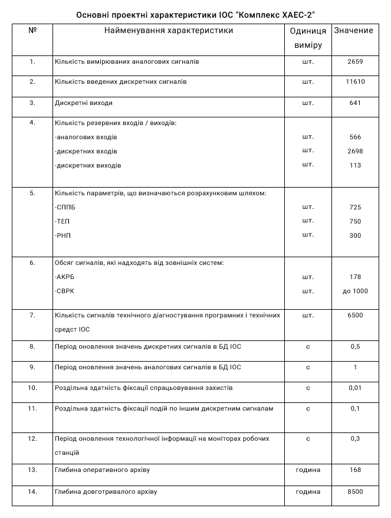

Послуги
Інститут пропонує:
- розробку ІОС і УВС систем в складі АСУ ТП енергоблоків ТЕС і АЕС;
- обстеження об'єктів, проектування і розробку АСУ ТП на нових та модернізованих об'єктах;
- виконання проектних робіт з реконструкції, удосконалення та впроваджувати АСУ ТП енергоблоками, що знаходяться в експлуатації і знову вводяться;
- тиражування розроблених систем в цілому і їх окремих частин;
- розробку експлуатаційної документації з інформаційного, програмного і технічного забезпечення АСУ ТП енергоблоками;
- підготовку персоналу для експлуатації ІОС та УОС у складі АСУ ТП енергоблоків;
- методичну та консультативну допомогу при створенні АСУ ТП в енергетиці;
- супровід систем в експлуатації.
РОЗРОБКИ І ДОСЯГНЕННЯ
- Розробка методів створення інтегрованих систем управління технологічними процесами енергоблоків ТЕС і АЕС, де спільно виробляється рішення задач технологічного, економічного і діагностичного контролю.
- Розробка методів створення інтегрованих систем управління технологічними процесами енергоблоків ТЕС і АЕС, де спільно виробляється рішення задач технологічного, економічного і діагностичного контролю:
- контролю і реєстрації (збір і обробка інформації, що вводиться через комплекс зв'язку з об'єктом (КСВ), обмін інформацією по локальній мережі блоку, обмін інформацією з зовнішніми системами, відображення інформації, сигналізація порушень, контроль параметрів генератора, реєстрація (архівування та документування) інформації;
- обслуговування захистів і блокувань (контроль захистів і блокувань (КЗБ), централізоване опробування захистів (ЦГЗ);
- прикладних задач (розрахунок і аналіз техніко-економічних показників (ТЕП) обладнання, розрахунок незмірних параметрів;
- • контролю параметрів безпеки (безперервне (в реальному масштабі часу) відображення оператору інформації, достатньої для визначення стану безпеки енергоблоку, інформаційна підтримка діяльності оператора щодо запобігання та локалізації аварійних ситуацій, контролю виходу радіоактивності в процесі нормальної експлуатації, при виникненні і після проектних аварій);
- інформаційно-довідкова (видача рекомендацій з управління технологічним обладнанням в перехідних режимах роботи енергоблоку, уявлення довідкової інформації про технологічне обладнання та засобах АСУ ТП енергоблока);
- підтримка функціонування (діагностика стану технічних і програмних засобів ІТТ, управління функціонуванням ІТТ, метрологічна калібрування вимірювальних каналів);
- автоматизованої настройки (генерація структур баз даних, введення, структурування і редагування вихідних даних, генерація даних, що настроюються.
- 3Екологічний моніторинг навколишнього середовища, інформаційну взаємодію в системі енергоблок-електростанція-енергосистема.
- Розробка і впровадження багатофункціональної інтегрованої багаторівневої системи внутрішнього реакторного контролю СВРК-М для енергоблоків з реакторами ВВЕР-1000 з резервуванням найбільш важливих функцій і відкриту для подальшого розширення, яка дозволяє:
- проводити контроль технологічних процесів в реакторної установки (РУ) і підтримувати параметри цих процесів в рамках, встановлених регламентом безпечної експлуатації АЕС;
- своєчасно виявляти вихід параметрів РУ, що визначають межі безпечної експлуатації за дозволені межі і оповіщення оперативного персоналу;
- забезпечувати інформаційної підтримки для оптимізації проходження технологічних процесів РУ в перехідних режимах;
- контроль працездатності та метрологічних характеристик вимірювальних каналів СВРК-М в процесі експлуатації енергоблоку;
- архівація роботи активної зони РУ і стану теплоносія 1-го контуру.

- Програмне забезпечення ІОС верхнього рівня складається:
- комплексу програм відображення інформації на екранах операторів блоку;
- комплексу програм сигналізації порушень;
- комплексу програм архівації та реєстрації;
- редактора підготовки відеокадрів;
- редактора динамічних блоків;
- редактор алгоритмів відображення.
Всі програми реалізовані на мові С ++ з використанням бібліотеки Qt і методів об'єктно-орієнтованого проектування. В якості системи управління БД використовується Firebird. Системне програмне забезпечення (ВПЗ) реалізовано на базі операційної системи Linux Fedora.
Розроблювальне ПЗ проходить обов'язкову процедуру верифікації. Випробування ПЗ проводяться: на унікальному полігоні ДП «ХІКА», на підприємстві виробнику технічних засобів, на енергоблоці при введенні в експлуатацію. Підтримка OPC технології. Власна унікальна SCADA система. Середовище функціонування ПО ОС UNIX і ОС Windows